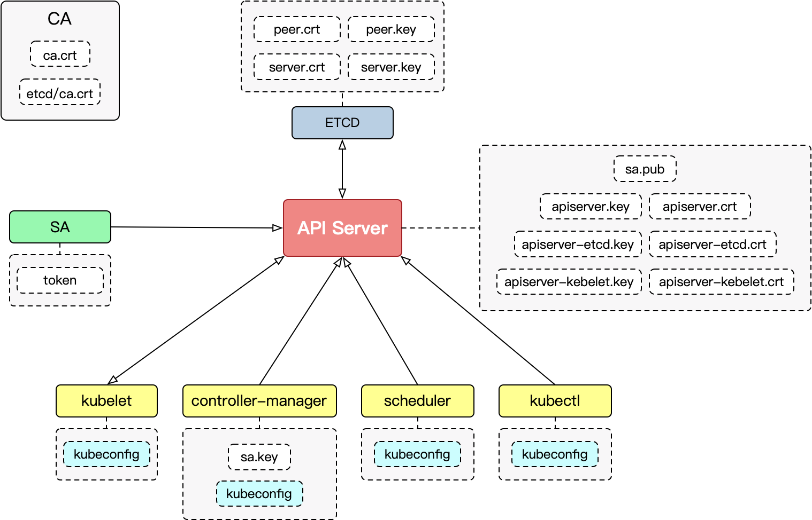

k8s认证
文章目录
k8s属于微服务架构，对资源的所有访问和变更都是通过API Server的REST API实现。所有访问API Server的请求都必须通过认证（Authentication）->授权（Authorization）->准入（Admission Control）才能被API Server响应，本文介绍认证相关内容。
认证的含义是验证客户端的身份，这里身份指的是k8s里的账户，对集群内和集群外的账户，k8s有不同的管理方式，后文会详细介绍。k8s使用双向认证，意味着不仅客户端要认证服务端身份，服务端也会对客户端进行认证。所以kubeconfig文件中包含了客户端自己的证书信息。
k8s常用认证方式大体可分为PKI证书和HTTP Token两种：
- PKI证书
- HTTPS
- kubeconfig
- HTTP Bearer Token
- Service Account Tokens
- Static Token File
- Bootstrap Tokens
本文基于kubeadm使用的PKI体系（单根CA证书），重点介绍kubeconfig和Service Account Token两种认证方式，这也是最常用的的认证方式。
账户体系
k8s的客户端：
- 集群内的应用（pod） — Service Account
- 集群外的普通用户（kubectl） — User Account
- 匿名访问
对比两类账户的不同：
- 针对的对象不同：Service Account 针对pod中的进程，User针对用户
- 作用范围不同：Service Account作用某个namespace，User作用整个集群
- 管理对象不同：Service Account由k8s创建并管理，User由使用者自行管理
Service Account
what：k8s资源对象，有专门的controller维护
why：为集群内的应用（pod）提供认证

controller-manager会为每个namespace创建名为default的默认SA（service account），并根据SA的私钥创建token，生成对应的Secret对象，如果pod未明确指定pod.spec.serviceAccountName，则会使用默认SA。接下来准入控制器会为pod添加volume并为所有container挂载，详细的步骤见Service Account Tokens。SA可以通过绑定Role对象来获取相应权限。
Service Account作为集群创建的用户，其用户名并非是SA资源对象的name，而是有特定的用户名：
system:serviceaccount:(NAMESPACE):(ServiceAccountName)
用户组：
system:serviceaccountssystem:serviceaccounts:(NAMESPACE)
User
what：非资源对象，逻辑访问者
why：为集群外部访问API Server提供认证，由集群管理者自行维护
k8s并不支持普通用户的创建和管理，但只要被集群CA证书签名的证书都可以用来访问API Server，证书中的subject会被当作用户名。
k8s PKI
PKI: Public key infrastructure，包括证书、密钥及其相关的所有操作。
k8s所有组件和kubectl客户端都是通过PKI证书完成TLS双向认证，这意味着服务端也要验证客户端的证书，所以每个服务端都必须有集群CA证书用来验证客户端证书。除了ETCD，其他组件都是通过对应kubeconfig文件进行认证，详情见kubeconfig。
下图展示了各个组件证书配置情况：
这里SA代表service account，所有集群内pod和API Server的HTTPS请求都通过service account token认证。controller-manager使用sa.key生成此token，API Server使用sa.pub认证token，详见[Service Account Tokens](#Service Account Tokens)。
ETCD和kubelet需要访问API Server，同时API Server也需要访问它们，所以API Server有专门用于访问它们的密钥对。
各证书的路径如下：
|
|
kubeconfig
what：用于配置集群访问的文件称为“kubeconfig 文件” ，客户端（user）访问API Server（cluster）的配置文件
why：可以管理多集群访问配置（context）
文件内容
kubeconfig文件中包含如下信息：
- 集群CA证书和集群ip:port（clusters）
- 客户端用户证书或者Token（users)
- 客户端用户和集群的绑定信息（context）
具体如下：

-
clusters
定义kubernetes 集群的端点数据
- 集群证书
- 集群地址
-
users
定义客户端认证凭据
- 用户名
- 用户证书
- 用户私钥
-
contexts
关联user和cluster
- cluster
- namespace
- user
如何配置kubeconfig
为外部用户创建一个新kubeconfig文件需要准备好一个密钥，并为此创建签名请求CSR（CertificateSigningRequsest）。然后我们就可以在集群中创建一个CSR资源对象，使用集群CA证书为CSR签名，得到客户端证书。有了证书我们就可以使用kubectl config命令创建或修改kubeconfig文件，一个具体的例子如下：
|
|
除了使用证书的方式来配置kubeconfig文件，我们也可以使用SA的token来配置kubeconfig，大致步骤是先创建一个SA并且使用ClusterRoleBinding对象和cluster-admin（ClusterRole）进行绑定，获取此SA的token并且配置到kubeconfig文件中，具体步骤如下：
|
|
此时再使用kubectl命令就是以SA的token进行认证。
认证流程
- 客户端通过kubeconfig文件获取API Server访问地址
TLS证书方式：
-
通过TLS协议交换双方证书
-
客户端使用CA证书验证API Server证书
-
API Server通过CA证书验证客户端证书
Token方式：
-
发起HTTPS请求时在HEAD中添加Token
-
客户端使用CA证书验证API Server证书
-
API Server使用sa.pub验证Token
Service Account Tokens
what：特殊的Bearer Token
why：用于SA的认证

认证流程
如上图示，Service Account Tokens的配置和维护涉及三个组件：
- ServiceAccount 准入插件
- Token 控制器
- ServiceAccount 控制器
认证步骤：
- ServiceAccount Controller 会为每个namespace生成default SA
- Token Controller（Controller-Manager)根据SA的私钥(sa.key)生成token，API Server根据SA的公钥认证token。
- ServiceAccount AdmissionControl根据pod.spec.serviceAccountName创建volume，并为每个container挂载。
- pod会在访问API Server的HTTP HEAD添加token
- API Server通过service account 的公钥(sa.pub)验证token，完成认证
service account公钥和私钥分别被配置到了 kube-apiserver 和 kube-controller-manager 的命令行参数中：
--service-account-key-file--service-account-private-key-file
pod如何使用
当定义pod时，API Server接收到创建pod请求，此时ServiceAccount 准入控制器负责为pod添加volume，并挂载到每个containers的rootfs上：
|
|
此volume有三个数据源：
- Namespace：pod所在命名空间，从
pod.metadata.namespace获取 - ca.crt：根CA证书，从configmap中获取
- Token：从SA关联的Secret获取。
卷的挂载路径为：/var/run/secrets/kubernetes.io/serviceaccount
|
|
Bootstrap Tokens
what：一种Bearer Token
why：新节点加入集群时使用，用于kubelet临时和API Server通讯以配置自己的kubeconfig
how：一般由kubeadm管理，以secret形式临时保存在kube-system namespace中
启动Bootstrap Tokens先要在API Server打开--enable-bootstrap-token-auth=true 参数，并在kubelet中启动--bootstrap-kubeconfig=/etc/kubernetes/bootstrap-kubelet.conf 参数。
新的节点加入集群的流程如下：

kubelet 启动时首先会去寻找kubeconfig文件，如果存在，则使用其直接加入集群，如果不存在，kubelet使用bootstrap.kubeconfig文件建立认证请求，通过 bootstrapping机制签发证书并自动创建kubeconfig文件，再使用新创建的kubeconfig加入集群。
如果使用kubeadm创建集群，当有新节点需要加入集群时，可以进行如下操作：
|
|
其中nyjmum.433eyof18cmdkibg 即为bootstrap token，格式为[a-z0-9]{6}.[a-z0-9]{16}，第一部分为token-id，第二部分为token-secret。在访问
我们运行完kubeadm token create命令后， kubeadm会帮我们在kube-system namespace下创建一个名为bootstrap-token-tokenid的secret，token-id和token-secret就记录在其中：
|
|
有了bootstrap token后，kubelet就可以使用token临时访问API Server，配置自己的kubeconfig文件。
|
|
参考
文章作者
上次更新 2022-07-04